音视频文件转mp4格式
ffmpeg 对媒体格式进行转封装；
媒体格式转封装是什么？？？
1）mp4 格式
2）格式解析方式、
3）如何获取mp4格式文件解析时需要的数据
4）mp4的可视化分析工具，
5）使用ffmpeg封装mp4文件
一、了解mp4的视频优势
跨平台好， 可以使用flash、ios、android 的H5播放。
二、MP4基本格式
MP4标准： ISO-14496 part 12 ， ISO-14496 part 14
这个链接如何进行查看？？？？ 【这个可以直接搜索，然后看维基百科的内容】
https://en.wikipedia.org/wiki/MPEG-4
1、几个概念：
（1）MP4 = (n)Box + (n)fullBox【 MP4是由许多个Box 与fullBox组成】
（2）Box = Header + Data
（3）FullBox 是Box的扩展，基于Box结构， 在Header中增加了8位version标志 和24位flag标志。
（4）Header 包含了整个Box的长度大小(size)和类型(type)
当size等于0时，代表这个Box是文件的最后一个Box；
当size等于1时，代表Box长度需啊哟更多的位来描述, 在后面定义一个64位的largesize来描述Box长度。
当Type为uuid时，说明这个Box中的数据是用户自定义扩展类型。
(5)Data 是Box的实际数据，可以是纯数据，也可以是更多的子Box。
(6)当一个Box中Data是一系列的子Box时，这个Box又可以成为Container（容器）Box。
2、Mp4 常用参考标准排列方式
1）看书p61
note：
MP4标准中描述的moov与mdat 的存放位置前后并没有进行强制要求，所以这些时候moov这个Box在mdat的后面和前面都有可能；
在互联网视频点播中，如果希望MP4文件被迅速打开，则需要将moov存放在mdat的前面；
如果放在后面，则需要将mp4文件下载完成了之后才可以进行播放。
下面是表的主要信息：
<1>moov容器
moov定了一个mp4文件中的数据信息【meta信息】，类型是moov， 是一个容器atom，其至少必须包含以下三种atom中的一种：
【atom是啥？ 隐式是存放音视频数据信息的一种数据结构】
1）mvhd(movie header atom) 存放未压缩过的影片信息的头容器
2）cmov（compressed movied atom）压缩过的电影信息容器，不常用
3）rmra（reference movie atom） 参考电影信息容器，不常用
4）包含其他容器信息，eg：影片剪辑信息(clipping atom(clip))、一个或几个trakAtom(trak)、一个Color table atom(atab) 和一个user data atom(udta)
详解：
1）mvhd 定义多媒体的time scale ，duration以及display characteristic；
track中定义了多媒体文件中的一个track信息，track是多媒体文件中可以独立操作的媒体单位，例如： 一个音频流就是一个track，一个视频流就是一个track。
使用二进制查看工具打开吗，哎一个mp4 文件。？？？ 使用什么工具？Hex fiend 、atom inspector工具打开
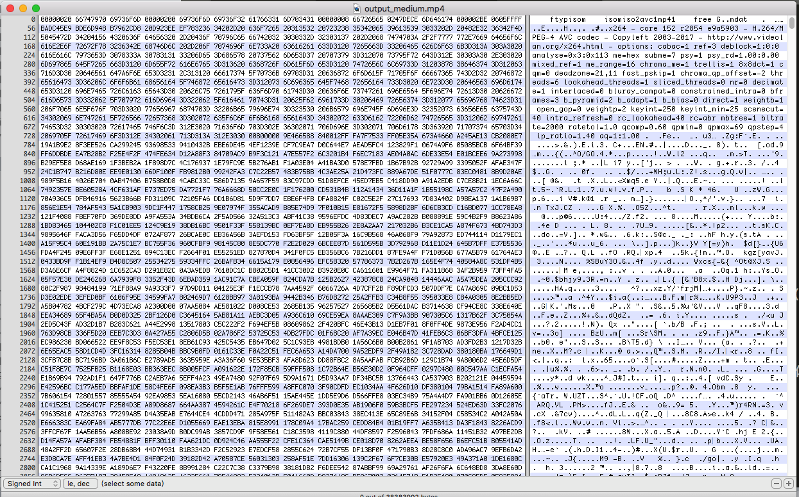
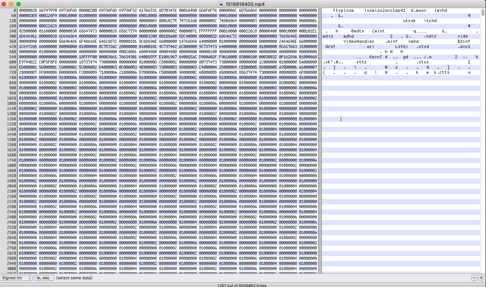
上面两张图中，上一张是视频被截断的，下一张是完整的视频， 我们开始应该尽可能的使用完整的视频
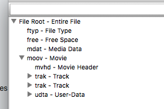
下面是moov参数：
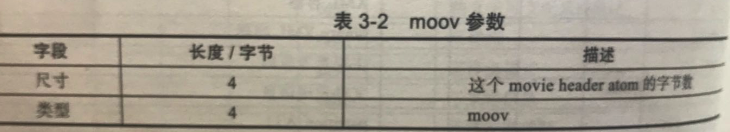
三、mp4 分析工具
mp4封装格式的分析工具：
ffmpeg、elecard streamEye/ mp4box, mp4info
1)Elecard StreamEye
<1>可以查看帧的排列信息，将I帧，p帧、B帧显示不同颜色；而且柱的长短根据帧的大小展示；
<2>mp4内容信息，包括流的信息、宏块的信息、文件头的信息、图像的信息以及文件的信息等。
set volume bootability and startup disk options,
设置启动能力和启动磁盘选项
https://www.elecard.com/videos
注册了一个，说5S发邮件给我，但是没有收到，下次使用google的邮箱看看
2) 查看一个媒体文件，使用vi来也是可以看到基本的内容的
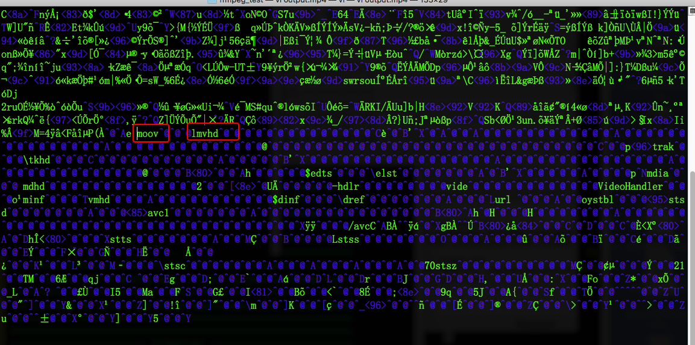
3) mp4box
mp4box 是GPAC 项目中的一个组件， 可以通过mp4box针对媒体文件进行合成、拆解等操作。
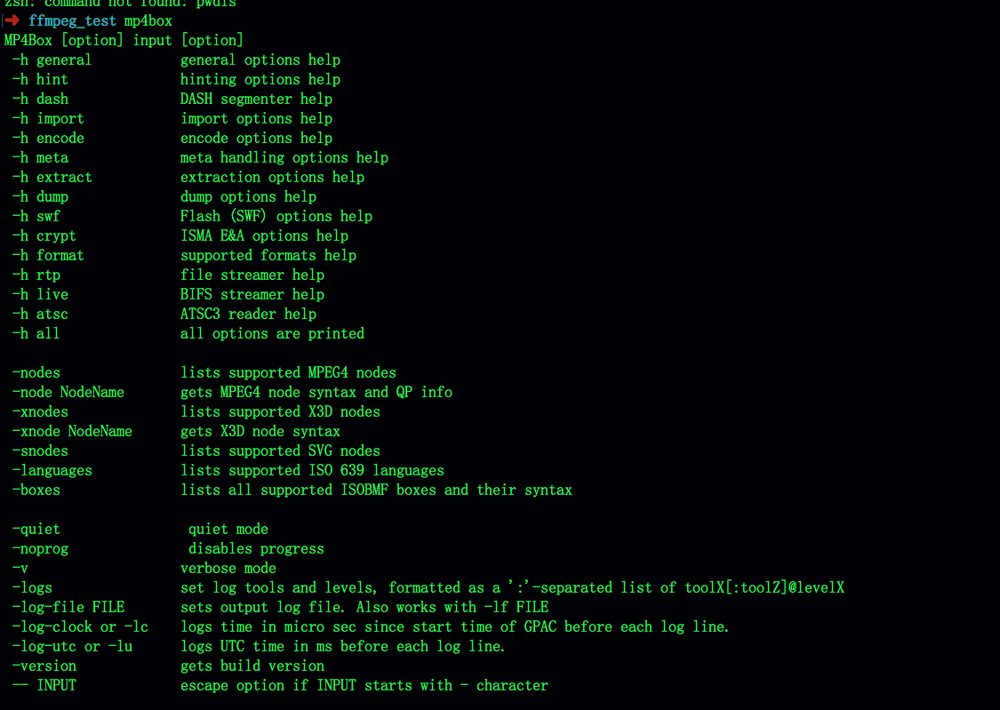
mp4box 有很多子帮助项，
eg： DASH 切片、编码、metadata、BIFS流、ISMA、SWF相关帮助信息等。
分析mp4文件,命令如下:
> mp4box -info 1519916400.mp4
输出信息
可以看到有timescale 、duration、framegremented等内容
4) mp4info
可以将mp4文件中的Box 解析出来，并将其中数据展现出来
官网链接：
https://www.bento4.com/
https://www.bento4.com/documentation/mp4info/
在mac上只有命令行的，没有图形界面的内容，这个到时候在进行写个mac应用吧；
直接执行： mp4info output.mp4
输出结果如下：
输出结果
四、mp4在ffmpeg中的Demuxer
命令如下：ffmpeg -h demuxer=mp4
结果如下图：
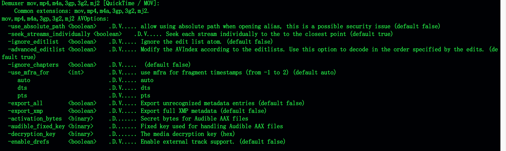
五、下面的
note：
MP4标准中描述的moov与mdat 的存放位置前后并没有进行强制要求，所以这些时候moov这个Box在mdat的后面和前面都有可能；
在互联网视频点播中，如果希望MP4文件被迅速打开，则需要将moov存放在mdat的前面；
如果放在后面，则需要将mp4文件下载完成了之后才可以进行播放。
下面是表的主要信息：
<1>moov容器
moov定了一个mp4文件中的数据信息【meta信息】，类型是moov， 是一个容器atom，其至少必须包含以下三种atom中的一种：
【atom是啥？ 隐式是存放音视频数据信息的一种数据结构】
1）mvhd(movie header atom) 存放未压缩过的影片信息的头容器
2）cmov（compressed movied atom）压缩过的电影信息容器，不常用
3）rmra（reference movie atom） 参考电影信息容器，不常用
4）包含其他容器信息，eg：影片剪辑信息(clipping atom(clip))、一个或几个trakAtom(trak)、一个Color table atom(atab) 和一个user data atom(udta)
详解：
1）mvhd 定义多媒体的time scale ，duration以及display characteristic；
track中定义了多媒体文件中的一个track信息，track是多媒体文件中可以独立操作的媒体单位，例如： 一个音频流就是一个track，一个视频流就是一个track。
使用二进制查看工具打开吗，哎一个mp4 文件。？？？ 使用什么工具？Hex fiend 、atom inspector工具打开
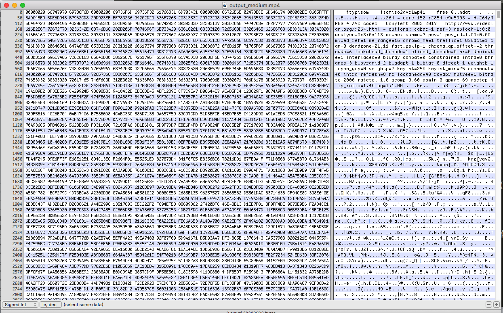
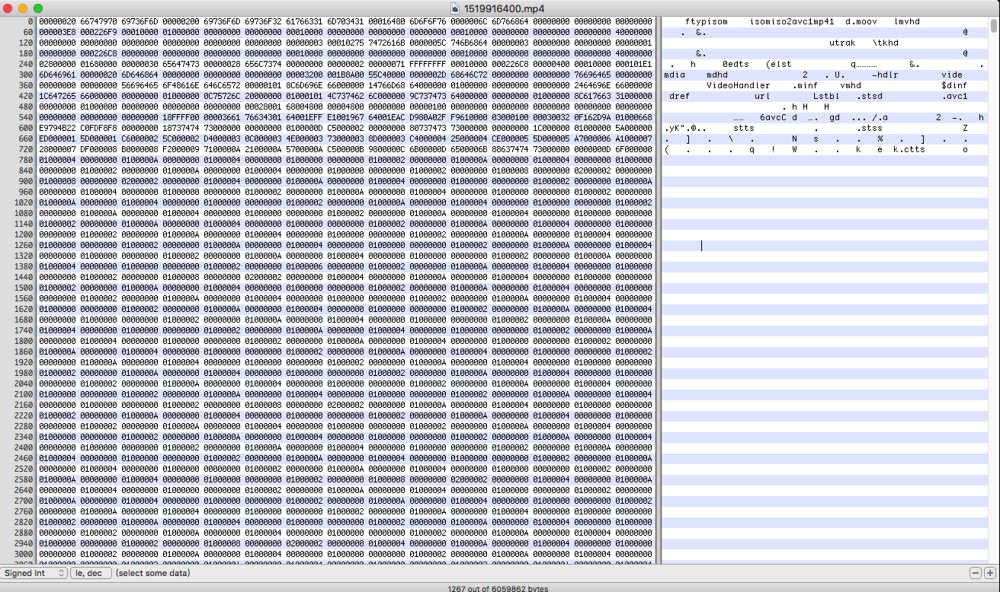
上面两张图中，上一张是视频被截断的，下一张是完整的视频， 我们开始应该尽可能的使用完整的视频
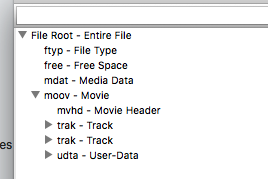
下面是moov参数：
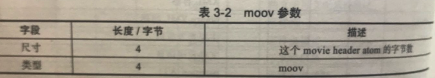
三、mp4 分析工具
mp4封装格式的分析工具：
ffmpeg、elecard streamEye/ mp4box, mp4info
1)Elecard StreamEye
<1>可以查看帧的排列信息，将I帧，p帧、B帧显示不同颜色；而且柱的长短根据帧的大小展示；
<2>mp4内容信息，包括流的信息、宏块的信息、文件头的信息、图像的信息以及文件的信息等。
set volume bootability and startup disk options,
设置启动能力和启动磁盘选项
https://www.elecard.com/videos
注册了一个，说5S发邮件给我，但是没有收到，下次使用google的邮箱看看
2) 查看一个媒体文件，使用vi来也是可以看到基本的内容的
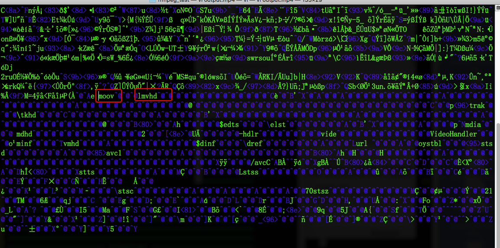
3) mp4box
mp4box 是GPAC 项目中的一个组件， 可以通过mp4box针对媒体文件进行合成、拆解等操作。
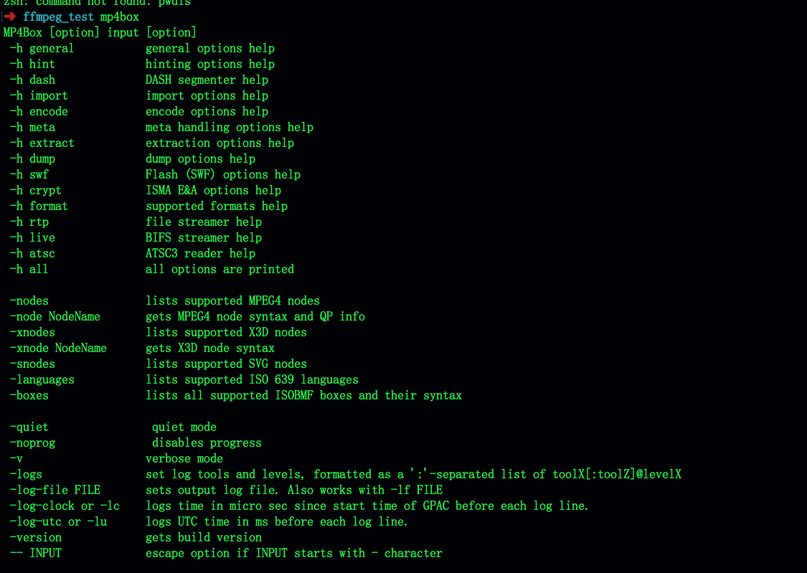
mp4box 有很多子帮助项，
eg： DASH 切片、编码、metadata、BIFS流、ISMA、SWF相关帮助信息等。
分析mp4文件,命令如下:
> mp4box -info 1519916400.mp4
输出信息
可以看到有timescale 、duration、framegremented等内容
4) mp4info
可以将mp4文件中的Box 解析出来，并将其中数据展现出来
官网链接：
https://www.bento4.com/
https://www.bento4.com/documentation/mp4info/
在mac上只有命令行的，没有图形界面的内容，这个到时候在进行写个mac应用吧；
直接执行： mp4info output.mp4
输出结果如下：
输出结果
四、mp4在ffmpeg中的Demuxer
命令如下：ffmpeg -h demuxer=mp4
结果如下图：
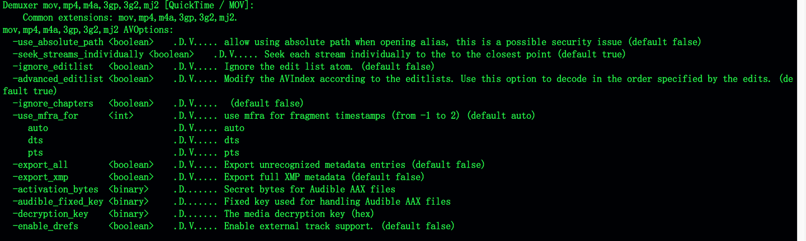